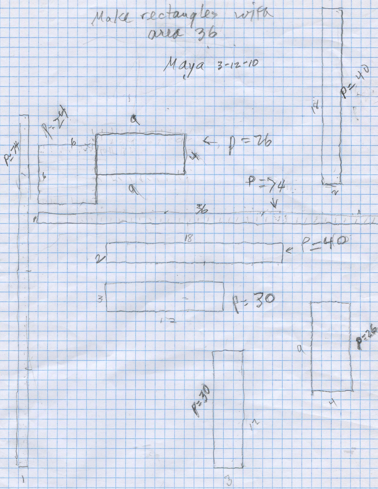
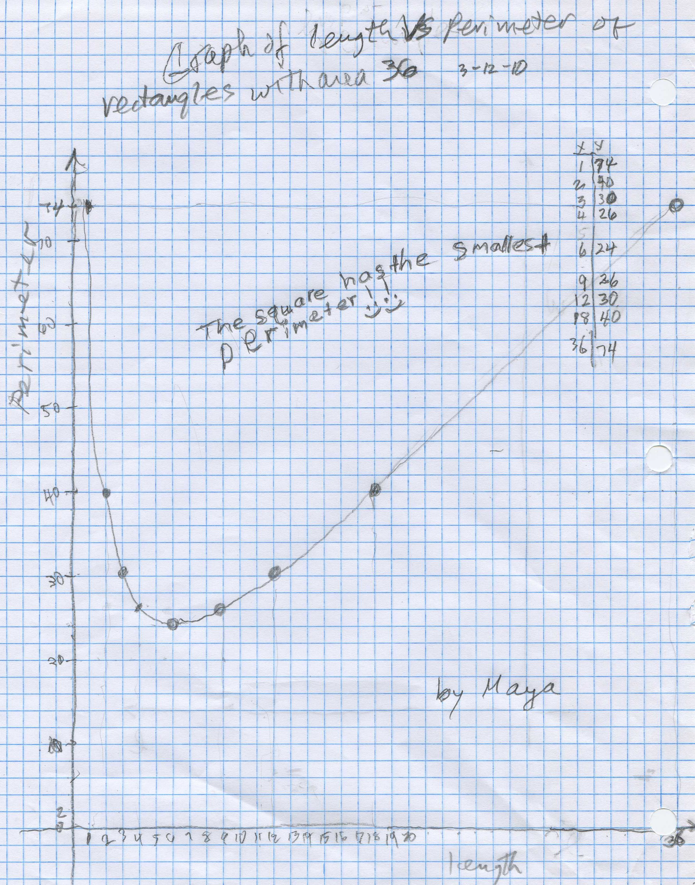

Perimeter of Rectangles with Area of 36/Chapter 14
Maya, just 9 years old, made rectangles whose area was 36. She started with the 4x9 rectangle. Don tried to show her that without counting all the squares, she could multiply 4x9=36, 4 rows of 9=36 to get the area. What was the perimeter? Again she counted around the outside, and started counting the corner squares. Don suggested she just add 9 + 9 + 4 + 4 = 26. After that she added the lengths of the sides. She continued on and Don had her do the 9x4 rectangle as well as the 4x9, keeping the length as the horizontal side.

The talked about factors of 36 and when she was finished, she had them all. Then Don suggested they graph the length vs Perimeter. Don made the axes to show the length on the horizontal axis, and the perimeter on the vertical axis. They talked about fitting tthe largest length, 36 on the horizontal axis- it just fit. The perimeter on the vertical axis had to go up to 74, which wouldn't fit if each square was 1 unit. Don helped Maya get to 2 units per square, which fit nicely. Maya helped count up by tens to get to 70, then 74, the biggest perimeter. Since the numbers were on a different sheet, Don made the table of pairs of number that we were going to plot on the graph paper. For length 1, the perimeter was 74, so Maya plotted the point at (1,74). She continued the rest, with Don keeping careful track, because she had to make sure she counted 2 units for each square; it was a little difficult because she also had to go across the paper for the vertical distance. At one point Don got a ruler to help her go across.

At the end, Don asked her what was the length of the rectangle which had the smallest perimeter. She looked at the graph and said 6, the square! Don brought her work upstairs to show her Mom.
Fine job Maya!
After they left, Don proceeded to show mathematically that this point (6,24) was a minimum point. He found the equation of the curve of P in terms of L, this way:
A=L*W = 36 divide by L to get
W = 36/L
and P = 2*L + 2*W . Substituting 36/L for W, we get rid of W, and
P = 2*L + 2*36/L =
P = 2*L + 72/L ,
which gives the perimeter in terms of the length of the rectangle.
Now he took the derivative of P (found the slope of the tangent to the curve), then set that equal to zero, because when the derivative is zero, we get a horizontal tangent and a maximum/minimum point.
Now take the derivative of P (call it P'). The derivative/slope of the tangent of 2L = 2. The derivative of 72/L (or 72*L-1 ) is -72* L-2 = - 72/L2 (the derivative of axn = an*xn-1 , a here is 72, x is L and n = -1)
Therefore the derivative of P, P' = 2 - 72/L2 . Setting this equal to 0, we get
2 - 72/L2 = 0. Multiplying each term by L2 , we get 2L2 -72 = 0 and adding 72 we get
L2 = 36 and
L = 6, the x-coordinate of the minimum point
And the perimeter P = 2*L + 72/L at the minimum point when L=6, is 2*6 + 72/6 = 12+12 = 24 which is what the graph shows!
N.B. The perimeter of the circle with area 36, is ~21.3, smaller than the primeter of a square with the same area!